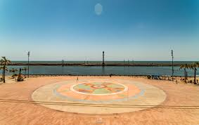
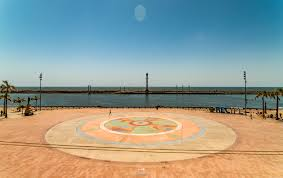
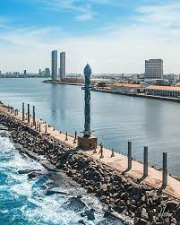
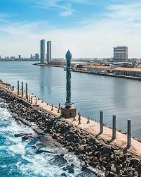
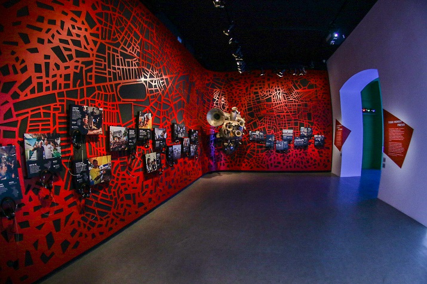
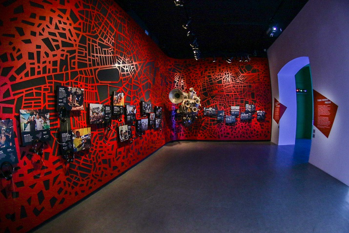

Marco Zero
O Marco Zero é uma praça ampla cercada de um lado por prédios históricos do final do século 17 e do outro pelo Rio Capibaribe (que corta a cidade). No chão, está pintada a emblemática “Rosa dos Ventos” e, no seu centro, uma peça em metal avisando que é ali que começa a contagem das distâncias entre Pernambuco e outras regiões do estado. Durante o carnaval, essa praça (chamada oficialmente de Rio Branco) se transforma em um grande palco cultural que reúne as maiores atrações da Folia de Momo. Nos demais meses do ano, o Marco Zero recebe muitos turistas que se impressionam com a vista do local: rio, mar, arquitetura holandesa, arte, gastronomia. Tudo fica ao redor dessa praça. Vale a pena sentar-se com calma e apreciar o cenário.
 

Centro de Artesanato
Os antigos armazéns portuários que ficam ao lado do Marco Zero foram transformados em espaços voltados para o turismo. Um deles é o Centro de Artesanato de Pernambuco. Esse ponto turístico de Recife funciona em dois sentidos: é uma grande galeria que expõe as obras dos artesãos e artistas de todo o estado e também uma central de vendas, pois você pode comprar tudo o que está exposto no local. Mesmo que a ideia não seja levar nada, entre e confira. Tem peças em barro, algodão, tecido, madeira, palha, couro e inúmeros outros materiais. É impossível não querer levar alguma coisa para casa. O espaço reflete bem o que o Pernambuco é: diverso, colorido, alegre e cheio de emoção.

Parque das Esculturas Francisco Brennand
Com vista para o Marco Zero, o Parque de Esculturas de Francisco Brennand é acessível de barco a partir da praça ou de carro, por um bairro chamado Brasília Teimosa, que sedia a Praia do Pina. A melhor forma de chegar até ele é pela navegação no Rio Capibaribe. Não são nem 5 minutinhos para ir do Marco Zero até o local, que fica à beira-mar, no molhe do porto. Lá, 90 esculturas são distribuídas no espaço que oferece uma vista privilegiada do Recife Antigo. Destaque para a Torre de Cristal, inspirada em uma flor descoberta por Burle Marx, que já dá para ser vista à distância e outras esculturas de ovos, tartarugas, pássaros etc. O local já foi mais preservado e alguns visitantes reclamam do aspecto de abandono que se encontra hoje em dia. Ainda assim é um bom passeio para ser feito de dia e nunca sozinho.
 


Paço do Frevo
Outro museu dedicado às tradições nordestinas é o Museu Paço do Frevo. Ele fica no Recife Antigo, a poucos metros do Marco Zero, na Praça da Torre Malakoff. O frevo, que vem do verbo “ferver” é considerado um Patrimônio Imaterial da Humanidade pela Unesco, e um grande ritmo pernambucano. O espaço tem várias salas com exposições de letras, composições, trajes dos passistas e discos de frevo no centro de documentação. Há também Escola de Música, de frevo e uma exposição fixa com a história de todas as agremiações recifenses. Se você tiver a sorte, pode presenciar uma aula aberta ou apresentações culturais, mais comuns aos finais de semana. Se você gosta de música e de uma boa folia de momo, é imperdível! E aproveite para tirar fotos criativas nas paredes e até no chão, que é de vidro com muitas fotos e estandartes das agremiações por baixo.
 
